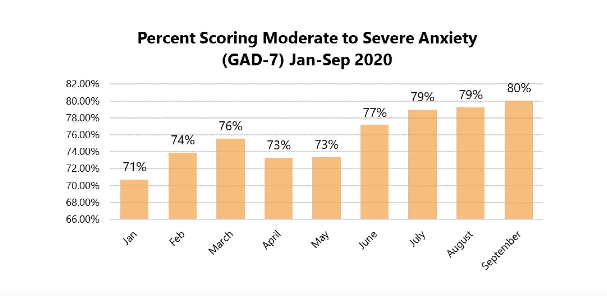
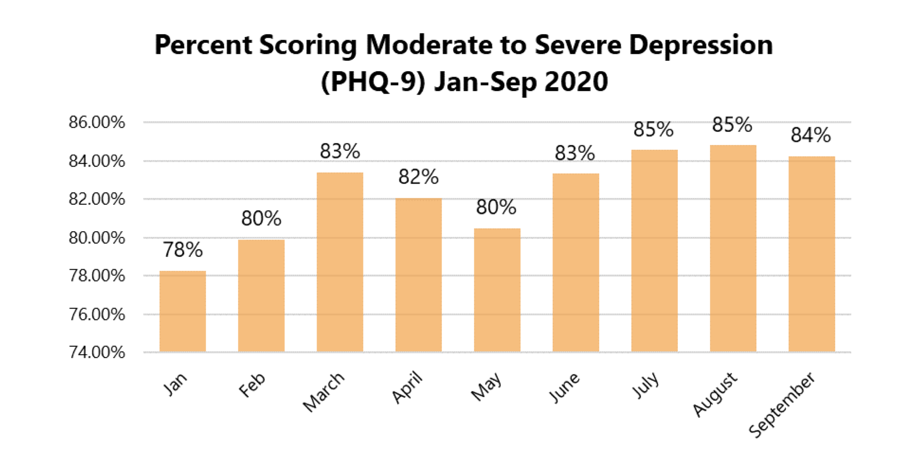
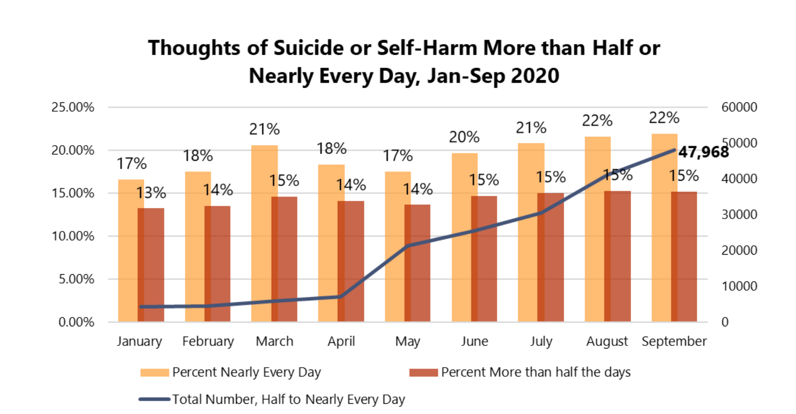
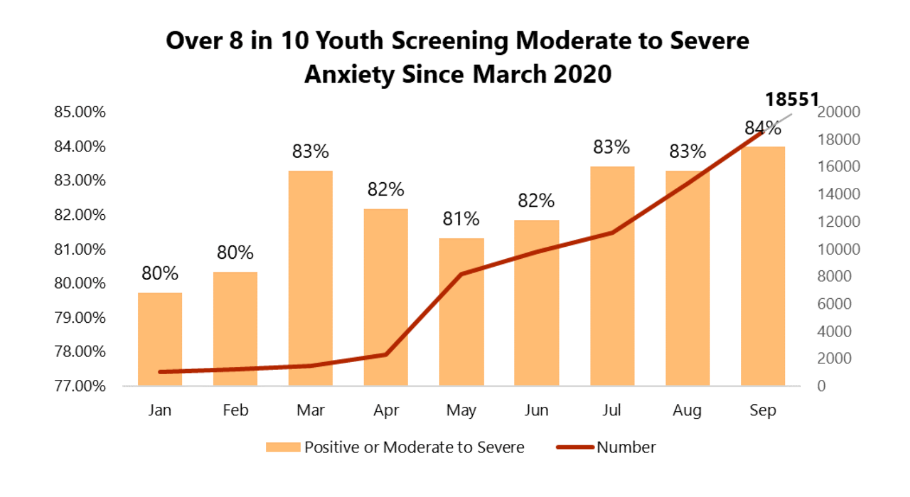
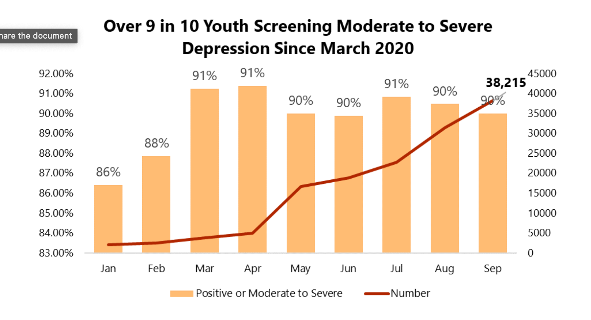
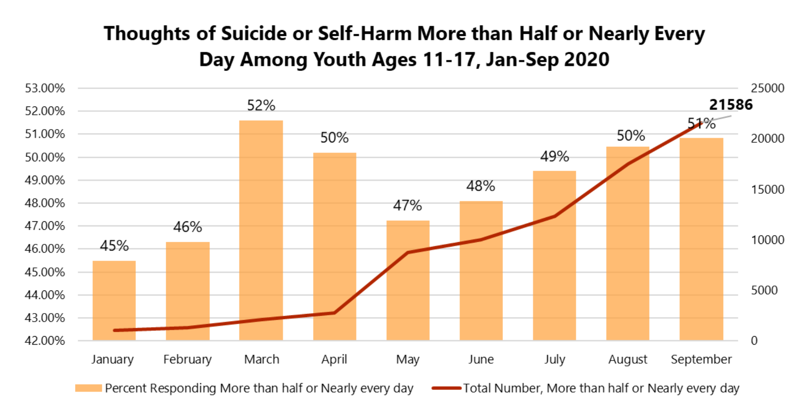

Mental Health America screened over 1.5 million americans from January-September 2020 and assesed their responses. Mental Health America gathered participants from the help-seeking population, people who searched out a study to treat their mental illnesses. Beacuse of this the data for moderate-servere is a little higher. The adult population is aged 18-55. The Youth is aged 11-17. 73% of particpants are female, 25% are male and 2% identifed as another gender.

MHA used the Generalized Anxiety Disorder 7-item tool for screening anxiety.

MHA used the Patient Health Questionnaire 9-item tool for screening depression. Over 530,000 people were screened for depression, 62% more than the number of participants in 2019.

A question on the PHQ-9 test asked "over the last two weeks how often have you been bothered that you would be better off dead or thought of hurting yourself. In 2020 the number/rate of people reporting frequent suicial ideaton was the highest level ever recorded for Mental Health America."
Youth
Throughout the pandemic youth aged 11-17 were the most likely age group to be moderate-severly anxious or depressed.

Over 80% of 11-17 year olds who were screened for anxiety scored moderate-severe, in total over 18,000 youths.

90% of the youth who screened for depression tested for moderate-severe depression.

Youths are the highest suicidal ideation group. 77,470 youths indicated having frequent suicidal ideation.
All data is from the 2021 COVID-19 and Mental Health: A Growing Crisis Mental Health America (MHA) report.